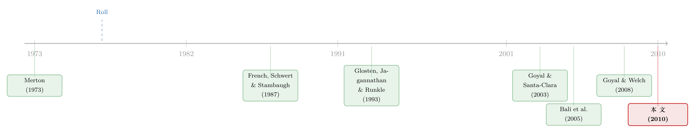

市场会涨还是会跌？别盯着波动率，去看股票们「有多齐心」
本文读的是 Pollet & Wilson (2010, Journal of Financial Economics)：股票市场的方差几乎可以分解成「平均方差 × 平均相关性」两块，而真正能预测下一季度市场超额收益的，不是大家盯了几十年的市场方差，也不是平均方差，而是股票之间的平均相关性——相关性越高，未来市场回报越高；平均方差则零、甚至负相关。
1 一个困扰了金融学三十年的「应该」
任何一个均衡金融理论的核心，都绕不开一句几乎像信条一样的话：风险越大，要求的回报越高。从总量的角度看，系统性风险一旦上升，厌恶风险的投资者就会索要更高的风险溢价，于是均衡预期收益必须上涨。把这句话写成方程，就是那个被无数论文反复检验的「方差-均值关系」(variance-in-mean relation)：
$$ r_{m,t+1} - r_{f,t+1} = b_0 + b_1 \mathrm{Var}_t[r_{m,t+1}] + \lambda x_t + e_{t+1} $$
理论说 \(b_1 > 0\)：市场的条件方差越大，下一期的超额收益应该越高。
听上去天经地义。可问题在于——数据偏偏不答应。
从 Campbell (1987)、French, Schwert, and Stambaugh (1987)，到 Glosten, Jagannathan, and Runkle (1993)，再到 Harvey (2001)，一大批顶尖的实证研究花了几十年想把这个「正的」方差-均值关系从数据里挖出来，结果却乏善可陈。French 等人用 GARCH 框架在月度数据里找到了正关系，但统计上只是勉强显著；而 Campbell (1987) 用 GMM 估计，找到的甚至是一个显著为负的线性关系。
这就尴尬了。一个理论上「应该成立」的关系，在数据里要么微弱、要么干脆反号。是理论错了，还是我们量错了东西？
这篇论文的全部魅力，就藏在「我们量错了东西」这个判断里。而要看清它错在哪，得先请出一位四十多年前就埋下伏笔的老朋友——Roll。
2 Roll 批判：你以为你在测「市场」，其实没有
1977 年，Roll 写下了那篇对 CAPM 实证检验的著名批判。它通常出现在 CAPM 的横截面检验语境里：真正的「总财富组合」(aggregate wealth portfolio) 是观测不到的，我们手里的股票指数只是它的一个子集，所以任何用股指代替市场组合的检验，检验的都不是 CAPM 本身。
Pollet 和 Wilson 的第一个洞见是：Roll 批判同样适用于时间序列上的方差-均值检验。
道理是这样的。如果可观测的资产组合（股票）恰好就是总财富，那么总风险就等于股市风险，股市方差直接可观测，方差-均值关系也就名正言顺。可一旦股票只是总财富的一部分，麻烦就来了——
大部分股市方差的变动，可能来自那些与总财富回报正交的成分（持有总风险不变）。
换句话说，股市方差里混进了大量「与真正的系统性风险无关」的噪音。当股市方差上升时，如果总风险其实没变，那它必然伴随着「股市与总财富其余部分协方差」的反向调整。于是，盯着一个被污染的股市方差去预测收益，自然会失灵。
接着，一个自然的问题是：既然方差被污染了，有没有什么量能更干净地透露出真正的总风险变化？
作者的答案是：股票之间的相关性。
逻辑非常优雅。总财富组合的回报，是绝大多数资产回报里的一个共同成分（平均而言与个股回报正相关）。当真正的总风险上升时，在其他条件不变的情况下，股价就会更倾向于一起动——也就是说，相关性上升揭示了总风险上升。如果股市风险溢价正向依赖于总风险，那么股票间的平均相关性就应该能预测未来的市场超额收益。
这就是全文要反复讲透的那一个核心。
3 一个被刻意简化的模型：把方差拆成两半
作者搭了一个极简但极有说服力的模型，把上面的直觉变成可检验的方程。我们一步步来看，因为每一步都恰好回答了「为什么是相关性、而不是方差」这个问题。
第一步：对数 CAPM 成立。 借用 Campbell and Viceira (2002) 的设定，资产回报条件联合对数正态，幂效用投资者的最优持仓给出（对资产 \(i\)，调整 Jensen 不等式后）：
$$ E_t[r_{i,t+1}] - r_{f,t+1} + \frac{\sigma^2_{i,t}}{2} \approx \gamma\, \sigma_{im,t} $$
也就是说，资产 \(i\) 的预期超额（对数）收益，正比于它与真实市场组合 \(m\) 回报的条件协方差 \(\sigma_{im,t}\)，\(\gamma\) 是相对风险厌恶系数。
第二步：构造 \(N\) 只对称股票。 设有 \(N\) 只对称股票（\(N\) 很大），每只股票的回报由一个共同的市场成分和一个特质成分组成。冲击中含一个方差为 \(\theta_t \sigma^2_{z,t}\) 的共同股市成分 \(e_{z,t+1}\)，以及方差为 \((1-\theta_t)\sigma^2_{z,t}\) 的正交特质成分 \(e_{i,t+1}\)：
$$ R_{i,t+1} = \beta_t R_{m,t+1} + e_{z,t+1} + e_{i,t+1} $$
把个股加总，特质成分在大样本下被抹平，于是整个股市的回报可以写成：
$$ R_{s,t+1} = \beta_t R_{m,t+1} + e_{z,t+1} $$
第三步——也是最关键的一步：方差与协方差。 任意个股的方差、以及任意两股的协方差（在 \(N\) 很大时即为股市方差）分别是：
$$ \sigma^2_t = \beta_t^2 \sigma^2_{m,t} + \sigma^2_{z,t}, \qquad \sigma^2_{s,t} \approx \rho_t\, \sigma^2_t = \beta_t^2 \sigma^2_{m,t} + \theta_t \sigma^2_{z,t} $$
请盯住这两行。左边的 \(\sigma^2_t\) 是平均方差（单只股票的方差），右边的 \(\sigma^2_{s,t} = \rho_t \sigma^2_t\) 是股市方差，\(\rho_t\) 就是平均相关性。两者之差，恰恰是 \(\sigma^2_{z,t}\) 里那块「与总风险正交、被 \((1-\theta_t)\) 加权」的特质性波动。
于是反转出现了。 整理上面两式，把股市风险溢价写出来，就得到模型的核心表达（式 6）：
$$ E_t[r_{s,t+1}] - r_{f,t+1} + \frac{\rho_t\sigma^2_t}{2} = \frac{\gamma}{\beta_t(1-\theta_t)}\,\rho_t\sigma^2_t \;-\; \frac{\gamma}{\beta_t(1-\theta_t)}\,\theta_t\sigma^2_t $$
这个式子在说：股市风险溢价线性地依赖于股市方差 \(\rho_t\sigma^2_t\)，再减去股市方差里那块与总风险无关的部分 \(\theta_t\sigma^2_t\)。
接下来对它在 \(E[\rho_t]\) 与 \(E[\sigma^2_t]\) 附近做线性近似（令 \(\beta_t=\beta\)、\(\theta_t=\theta\) 为参数），就得到了真正能拿去跑回归的式 (7)：
直觉是什么？只要 \(E[\rho_t]\) 接近 \(\theta\)，平均相关性的系数为正，而平均方差的系数为负。因为已实现的股市收益里有很大一块与总财富回报无关——而平均方差正是股市方差里那块「无关噪音」的主力。这就一举解释了那个困扰了三十年的谜题：
股市方差之所以预测能力疲软，不是因为风险-收益关系不存在，而是因为股市方差 = 平均相关性 × 平均方差，其中平均相关性这块「有用信号」被平均方差这块「无关噪音」给稀释、污染了。把两块拆开，信号自然就显形了。
4 识别策略：怎么把这两块量出来
理论说股市方差近似等于「平均相关性 × 平均方差」，作者用一个干净的恒等式把它落地。把股市方差写成所有股票对的加权和并展开，可以证明（式 10）：
$$ \sigma^2_{s,t} = \sigma^2_t \sum_{j=1}^{N}\sum_{k=1}^{N} w_{j,t} w_{k,t}\, \rho_{jk,t} = \sigma^2_t\, \rho_t $$
也就是：股市方差 ≈ 价值加权的平均方差 × 价值加权的平均相关性。作者随后证明，这个近似几乎捕捉了股市方差全部的时间序列变动。
具体怎么估？每个季度 \(t\)，从 CRSP 中按市值取最大的 500 只股票，用季度内的日度收益直接算两个量：
$$ AV_t = \sum_{j=1}^{500} w_{j,t}\,\hat\sigma^2_{j,t}, \qquad AC_t = \sum_{j=1}^{500}\sum_{k\neq j} w_{j,t} w_{k,t}\, \hat\rho_{jk,t} $$
\(AV_t\) 是平均方差，\(AC_t\) 是平均相关性，权重都用季末市值。再用 CRSP 价值加权指数的日度收益估出股市方差 \(\hat\sigma^2_{s,t}\)，于是有验证性回归（式 14）：
$$ \hat\sigma^2_{s,t} = b_0 + b_1\,(AV_t \cdot AC_t) + u_t $$
注意作者很坦诚地说，\(b_1\) 未必等于 1，因为 (i) \(AC_t\) 里剔除了权重平方项，(ii) \(AV_t\)、\(AC_t\) 都有测量误差，(iii) CRSP 指数与「500 大股票组合」在成分上有差异。但实证上这个乘积几乎吃掉了股市方差的全部时间序列变动——这正是「分解成立」的硬证据。
预测回归这边，被解释变量是 CRSP 价值加权组合的季度对数超额收益（也用 S&P 500 做稳健性，因为它较少受小盘股流动性污染），解释变量是 \(AC_t\) 与 \(AV_t\)，并控制 cay（Lettau and Ludvigson, 2001）、pd（对数价格-股利比）、rf（三个月期 T-bill 对数收益）、GARCH(1,1) 条件方差等。
5 数据与那张会说话的相关系数矩阵
样本是 CRSP 全样本里按市值最大的 500 只交易所股票，1963Q1 到 2006Q4，季度频率，日度方差/协方差再乘以 63（一个季度的平均交易日数）以对齐到季度尺度。
几个关键数字值得记住。平均相关性 \(AC\) 的均值是 0.237，标准差 0.093；平均方差 \(AV\) 的均值是 2.217%，而股市方差的均值只有 0.482%——后者低得不奇怪，因为它已经被分散化「打薄」了。平均方差的波动是股市方差的三倍。\(AC\) 与 \(AV\) 之间是较弱的正相关，0.312。
但真正点睛的是相关系数矩阵里那一行：季度超额收益 \(r^e_{CRSP}\) 与各变量的当期相关。
- 与平均相关性：
−0.293 - 与平均方差：
−0.275 - 与股市方差：
−0.422 - 与
GARCH(1,1)：−0.302
注意这是同期相关，全是负的——这其实正是「波动率反馈」(volatility feedback) 的影子：相关性突然走高的当下，折现率上升、价格立刻下跌（已实现负收益）。可一旦把目光移到下一季度的预测上，平均相关性就翻成了正向预测变量。这个「同期为负、领先为正」的对照，是全文叙事的关键支点。
6 主要结果：相关性赢，方差出局
把模型的预言拿去对数据，结论干净得几乎不像实证文章：
-
股市方差 ≈ 平均相关性 × 平均方差 这个分解，几乎完整地捕捉了美国股市日度超额收益样本方差的全部变动。两块拼起来，就是整个市场方差。
-
这两块里，平均相关性强烈地正向预测未来的市场超额收益，而平均方差几乎没有任何可辨识的预测力。于是「股市方差预测能力弱」这件事被彻底说清了：它弱，是因为有用的相关性信号被无用的平均方差给污染了。
-
平均相关性的样本外 \(R^2\) 超过 3%，因此通过了 Goyal and Welch (2008) 那道以严苛著称的样本外检验。（关于样本外可预测性这场旷日持久的争论，可参见《风险溢价，是「消失」了，还是「断」掉了？》。）
-
控制住平均相关性之后，平均方差与未来市场收益甚至呈负相关（虽不显著）。这一点上，本文与 Bali, Cakici, Yan, and Zhang (2005) 一致，而与 Goyal and Santa-Clara (2003) 相左——后者声称平均方差有正向预测力，但 Bali 等人指出，一旦剔除 Nasdaq、Amex 股票，或改用价值加权/中位数方差，这种预测力就消失了。
顺带一提，本文还顺手解释了一个看似无关的现象——非对称相关性 (asymmetric correlation)：股市下跌时股票相关性更高（Longin and Solnik, 2001；Ang and Chen, 2002；Hong, Tu, and Zhou, 2007）。作者的解释是：相关性上升若源于总风险上升，折现率随之抬高，按 Campbell and Hentschel (1992) 的波动率反馈逻辑，当期会出现平均负收益。所以非对称相关性，其实是「总财富波动率」涨落引发的波动率反馈，而非股市波动率本身的变化。同样的机制还呼应了 Driessen, Maenhout, and Vilkov (2009) 的发现——为什么期权市场里相关性风险被定价、个股波动率风险却不被定价。
这种「把市场层面的某个高阶矩，拆成横截面上的某种平均量，再用它预测大盘」的思路，近年并不孤单。一个直系的近亲，是用全体股票收益的横截面偏度去预测市场方向（见《市场的下一步，藏在一万只股票的「歪斜」里》）；而本文挑战的「市场组合其实只是一小撮巨头」这一 Roll 式命题，也可与《两种市场收益的故事》对照着读。
7 文献脉络
把这条线索捋直，故事其实很清楚。
源头是 Merton (1973) 的跨期 CAPM——它给「风险越大、回报越高」的方差-均值关系提供了理论根基。可就在四年后，Roll (1977) 抛出了那记重锤：真正的市场组合观测不到，所有用股指代替它的检验都站不住脚。
接着，是一整代人前赴后继地想在数据里坐实那个正向的方差-均值关系：French, Schwert, and Stambaugh (1987) 用 GARCH 找到了勉强显著的正关系，Campbell (1987) 却找到了负关系，Glosten, Jagannathan, and Runkle (1993) 进一步发现条件方差与收益的关系敏感而脆弱。证据越积越多，结论却越来越模糊。
然后，争论的焦点转向了「特质波动率/平均方差到底有没有用」：Goyal and Santa-Clara (2003) 说平均方差能预测大盘，Bali, Cakici, Yan, and Zhang (2005) 紧接着说这结论经不起样本和加权方式的推敲，Ghysels, Santa-Clara, and Valkanov (2005) 又用 MIDAS 宣称「风险-收益权衡终究是存在的」。

但真正关键的一步，是 Pollet and Wilson (2010) 把 Roll 批判搬进了时间序列：既然股市方差是被污染的代理变量，那就别再纠结它整体上是正是负，而是把它拆开——平均相关性才是透露真实总风险的那扇窗，平均方差不过是稀释信号的噪音。这条线索从此有了一个清晰的落点。
8 评论与延伸（Q&A + 研究方向）
(a) 几个可能的疑问
Q：平均相关性和平均方差，到底哪个才是「股市波动率」？
都不是、又都是。股市方差 \(\approx \rho_t \times \sigma^2_t\)，是两者的乘积。平均方差 \(\sigma^2_t\) 量的是单只股票自己抖得多厉害（含大量特质噪音），平均相关性 \(\rho_t\) 量的是股票们「有多齐心」。本文的全部主张就是：只有后者干净地反映总风险，所以只有它能预测收益。
Q：相关性预测收益，会不会只是「相关性高的时候恰好市场刚跌完、于是反弹」这种机械的均值回归？
作者对此是有防御的。同期相关性与收益是负的（
−0.293），但领先一期的预测系数是正的，而且控制了cay、pd、rf、GARCH等已知预测变量后依然站得住，样本外 \(R^2\) 还超过 3%。这说明它不是简单的当期反弹，而是携带了关于未来风险溢价的信息。
Q：为什么用「最大的 500 只股票」而不是全市场？
一是计算所有股票对的相关性在大 \(N\) 下不现实，500 只足以逼近；二是大盘股较少受小盘股流动性、买卖价差污染（这也是作者额外用 S&P 500 做稳健性的理由）。Brown and Kapadia (2007) 还指出，等权平均方差会被「新上市公司比例」带偏，所以本文坚持用价值加权，规避了这个陷阱。
Q：这和「特质波动率能不能预测收益」那场 Goyal–Santa-Clara 之争是什么关系？
本文站在 Bali 等人一边：Goyal and Santa-Clara (2003) 看到的平均方差预测力，主要是 \(AV\) 里混入了 \(AC\) 的成分（因为股市方差是两者乘积）。一旦把相关性单拎出来控制住，平均方差自己的预测力就归零甚至转负。所以那场争论，本质上是没有把两块拆开。
Q：模型假设股票「对称」，现实里股票千差万别，结论还成立吗？
对称只是为了把代数写干净、把直觉讲透。真正落地的恒等式（式 10）并不要求对称——它对任意权重、任意相关性结构都成立，作者还明说「结论不依赖于计算 \(\sigma^2_t\) 所用的加权方案」。模型的对称假设负责讲故事，分解恒等式负责扛实证。
Q：既然相关性这么管用，为什么 GARCH 这类条件方差模型抓不到它？
因为 GARCH 建模的是股市方差本身，而股市方差被平均方差主导、被特质噪音污染。哪怕你把股市方差预测得再准（论文还指出，传统估计量预测已实现股市方差的 \(R^2\) 反而比 MIDAS 更高），只要这个被预测的对象本身信号含量低，对收益的预测就无济于事。
(b) 几个可能的研究问题与提案
- 公司债市场的「平均相关性」能否预测信用利差？
- 【经济故事】股票里相关性揭示总风险，债券同理：当违约风险的共同成分上升，发行人信用利差会更「齐步走」。若平均相关性领先于信用利差或债券超额收益，机制与本文同源。
-
【可行性】中。所需数据：TRACE 日度成交价构造债券收益、按发行人/评级算两两相关。难点在于公司债日内成交稀疏、价格离散，相关性估计噪音大；需借助流动性较好的大发行人子样本，识别上偏关联性证据而非干净因果。
-
外资持有人份额是否系统性地抬高了一国股市的平均相关性？
- 【经济故事】外资在风险冲击下常同步进出（共同的全球折现率冲击），若外资份额高的市场平均相关性更易被全球因子推动，则本文的「相关性揭示总风险」可以拆出一条「全球 vs 本地」的维度。
-
【可行性】中。数据：跨国持股（如 FactSet/EPFR）+ 各国指数成分日度收益。识别可借助指数纳入等准外生的可投资度变化做差分；挑战是把全球共同冲击与本地总风险分离开。
-
平均相关性的预测力，是否集中在「中介/做市商资本紧张」的时段？
- 【经济故事】若相关性上升反映的是总风险，而总风险又与中介约束相关，那么相关性的预测系数应在中介杠杆紧张时更陡。这能把本文与中介资产定价缝在一起。
-
【可行性】高。数据现成：本文的 \(AC_t\) 序列 + 既有的中介资本比率指标，做交互项回归即可。属于增量、可直接上手的实证延伸。
-
把平均相关性做成实时（intraday/高频）信号，看它对短期市场反转的领先性。
- 【经济故事】本文是季度频率，但波动率反馈是即时的。若用高频日内相关性构造信号，或许能更早捕捉折现率冲击。
- 【可行性】中高。数据：TAQ 高频成交。难点是高频相关性的微观结构噪音（异步交易、价差），需用合适的高频协方差估计量（如 realized correlation 的去噪版本）。
9 参考文献
这篇论文最漂亮的地方，是把一个看似纯实证的老谜题（方差为何预测不了收益），用一个三行就能写完的分解恒等式 \(\sigma^2_{s,t}=\rho_t\sigma^2_t\) 给彻底说穿了——信号和噪音原本就被乘在一起，难怪谁也单独看不清。贡献是双重的：既给出了一个稳健、能过样本外检验的新预测变量（平均相关性），又用 Roll 批判统一解释了为什么市场方差、平均方差都不行，还顺带收编了非对称相关性和相关性风险定价两个旁支现象。
对识别的担忧主要有三点：其一，预测回归天然有 Stambaugh (1999) 式的小样本偏误，持续性强的预测变量（\(AC\) 一阶自相关 0.579）会让系数有限样本里偏置，论文若对此的处理不够充分，正向预测力的统计强度要打个折扣；其二，500 大股票的选择虽规避了流动性污染，但也意味着结论是对「大盘相关性」而非全市场而言；其三，模型把 \(\beta\)、\(\theta\) 当常数做线性近似，而这两个参数本身很可能随状态变化（衰退期 \(\theta\) 是否更高？），这会反过来影响系数符号的稳健性。
后续我最想看到的，是把这个「相关性揭示总风险」的框架，从美股搬到公司债与外资持有两个我更关心的场域：在信用市场里，平均相关性会不会比信用利差的波动率更早预警违约潮？在跨国市场里，外资份额是不是平均相关性被全球因子主导的「放大器」？这两条都既有干净的经济故事，又有可得的数据，值得一试。
- Campbell, J.Y., 1987. Stock returns and the term structure. Journal of Financial Economics 18(2), 373–399.
- Campbell, J.Y., Hentschel, L., 1992. No news is good news: An asymmetric model of changing volatility in stock returns. Journal of Financial Economics 31(3), 281–318.
- Campbell, J.Y., Viceira, L.M., 2002. Strategic Asset Allocation. Oxford University Press.
- Bali, T.G., Cakici, N., Yan, X., Zhang, Z., 2005. Does idiosyncratic risk really matter? Journal of Finance 60(2), 905–929.
- Driessen, J., Maenhout, P.J., Vilkov, G., 2009. The price of correlation risk: Evidence from equity options. Journal of Finance 64(3), 1377–1406.
- French, K.R., Schwert, G.W., Stambaugh, R.F., 1987. Expected stock returns and volatility. Journal of Financial Economics 19(1), 3–29.
- Ghysels, E., Santa-Clara, P., Valkanov, R., 2005. There is a risk-return trade-off after all. Journal of Financial Economics 76(3), 509–548.
- Glosten, L.R., Jagannathan, R., Runkle, D.E., 1993. On the relation between the expected value and the volatility of the nominal excess return on stocks. Journal of Finance 48(5), 1779–1801.
- Goyal, A., Santa-Clara, P., 2003. Idiosyncratic risk matters! Journal of Finance 58(3), 975–1007.
- Goyal, A., Welch, I., 2008. A comprehensive look at the empirical performance of equity premium prediction. Review of Financial Studies 21(4), 1455–1508.
- Merton, R.C., 1973. An intertemporal capital asset pricing model. Econometrica 41(5), 867–887.
- Pollet, J.M., Wilson, M., 2010. Average correlation and stock market returns. Journal of Financial Economics 96(3), 364–380.
- Roll, R., 1977. A critique of the asset pricing theory's tests. Journal of Financial Economics 4(2), 129–176.
- Stambaugh, R.F., 1999. Predictive regressions. Journal of Financial Economics 54(3), 375–421.